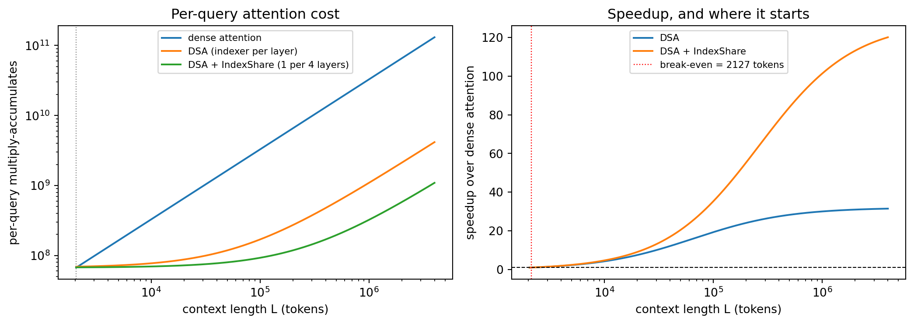
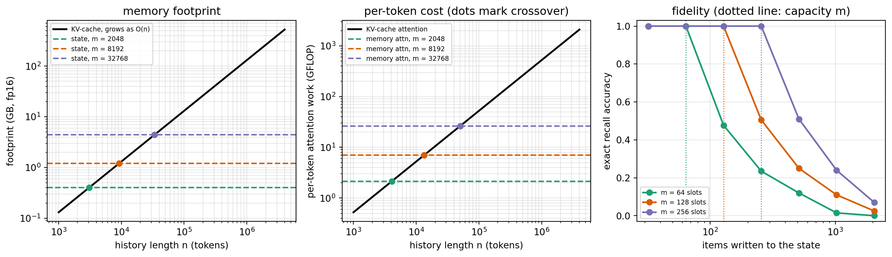

flowchart LR
subgraph MHA["MHA eight query heads eight KV heads"]
q1["q1"] --> k1["kv1"]
q2["q2"] --> k2["kv2"]
q3["q3"] --> k3["kv3"]
q4["q4"] --> k4["kv4"]
end
subgraph GQA["GQA eight query heads two KV groups"]
a1["q1"] --> g1["kv group 1"]
a2["q2"] --> g1
a3["q3"] --> g2["kv group 2"]
a4["q4"] --> g2
end
251 Efficient Attention: KV-Cache, GQA, and Flash Attention
251.1 Why Attention Efficiency Decides Whether a Model Ships
A transformer language model spends most of its serving life doing one thing: predicting the next token, one token at a time, given everything generated so far. The mathematics of self attention says that to predict token \(t\) the model attends over all \(t-1\) previous tokens. Taken literally, generating a sequence of length \(n\) recomputes attention over a growing prefix at every step, which costs \(O(n^2)\) work in total and, worse, reads and writes an \(O(n^2)\) matrix of attention scores through the memory hierarchy. On modern accelerators the second cost dominates: attention is memory bound, not compute bound, and the wall-clock bottleneck for long contexts is moving bytes, not multiplying numbers.
Three techniques, layered on top of one another, turn this from a research curiosity into a deployable system. The KV-cache removes the redundant recomputation, dropping the per-step cost of decoding from \(O(n^2)\) to \(O(n)\) and making autoregressive generation tractable at all. Grouped-query attention (GQA) and its extreme, multi-query attention (MQA), shrink the cache itself by sharing key and value projections across query heads, which is what makes long contexts fit in memory. FlashAttention restructures the attention computation so it never materializes the full score matrix in slow memory, turning the prefill and training passes from memory bound back toward compute bound. Paged attention then manages the cache like virtual memory so a server can pack many concurrent requests without fragmentation.
This chapter develops the mathematics of each, then shows code. The CPU-feasible parts (a from-scratch KV-cache and a grouped-query demo) are executed here on small tensors so you can see the asymptotics and the numerics directly, and one GPU cell is executed on an accelerator to measure the KV-cache speedup on a small real model with the Hugging Face Transformers decode path. The parts that need a clean CUDA kernel build or a multi-billion-parameter model (fused FlashAttention kernels, paged attention in vLLM, GPU sliding-window attention) are shown as real, runnable library invocations with an honest note that they require an accelerator.
251.2 Self Attention and the Cost of Naive Decoding
Fix one attention head. Let the input be a sequence of \(n\) token vectors stacked as rows of \(X \in \mathbb{R}^{n \times d_{\text{model}}}\). Three learned projections produce queries, keys, and values,
\[ Q = X W_Q, \qquad K = X W_K, \qquad V = X W_V, \]
with \(W_Q, W_K, W_V \in \mathbb{R}^{d_{\text{model}} \times d_k}\) and \(Q, K, V \in \mathbb{R}^{n \times d_k}\). Scaled dot-product attention is
\[ \operatorname{Attn}(Q, K, V) = \operatorname{softmax}\!\left(\frac{Q K^\top}{\sqrt{d_k}} + M\right) V , \]
where \(M\) is the causal mask with \(M_{ij} = -\infty\) for \(j > i\) and \(0\) otherwise, so that token \(i\) attends only to positions \(j \le i\).
The score matrix \(S = QK^\top / \sqrt{d_k}\) is \(n \times n\). Forming it costs \(O(n^2 d_k)\) floating-point operations and, decisively, \(O(n^2)\) memory traffic to write \(S\), read it back for the softmax, and read it again for the multiply by \(V\). For a single full sequence (training, or the prefill of a prompt) this is paid once. For autoregressive decoding the picture is worse: a naive implementation that re-runs the full attention at every generated step pays \(\sum_{t=1}^{n} O(t^2) = O(n^3)\) across the whole generation. That cubic blowup is the wall a KV-cache exists to remove.
251.3 The KV-Cache: From Quadratic to Linear Per Step
The key observation is that during decoding the keys and values of past tokens never change. When we generate token \(t\), its query \(q_t = x_t W_Q\) is new, but the keys \(k_1, \dots, k_{t-1}\) and values \(v_1, \dots, v_{t-1}\) are exactly the ones computed at earlier steps. There is no reason to recompute them.
A KV-cache stores the running matrices \(K_{<t}\) and \(V_{<t}\). At step \(t\) we compute only the new key and value, append them, and attend the single new query against the whole cache:
\[ k_t = x_t W_K,\quad v_t = x_t W_V,\qquad K_{\le t} = \begin{bmatrix} K_{<t} \\ k_t \end{bmatrix},\quad V_{\le t} = \begin{bmatrix} V_{<t} \\ v_t \end{bmatrix}, \]
\[ o_t = \operatorname{softmax}\!\left(\frac{q_t K_{\le t}^\top}{\sqrt{d_k}}\right) V_{\le t} . \]
Now step \(t\) does a single query against \(t\) keys: \(O(t \, d_k)\) work and \(O(t)\) memory traffic, not \(O(t^2)\). Across the full generation the total is \(\sum_{t=1}^{n} O(t) = O(n^2)\) work, and the per-step cost is linear in the context length rather than quadratic. The causal mask disappears at decode time because the cache contains only past positions by construction.
The price is memory. The cache holds, per layer and per head,
\[ \text{KV bytes} = 2 \times n_{\text{layers}} \times n_{\text{kv heads}} \times d_k \times n_{\text{tokens}} \times \text{batch} \times \text{bytes per element}. \]
The factor of two is keys plus values. This number grows linearly with context length and batch size and, at long context, dominates the memory budget of a served model, often exceeding the size of the weights themselves. Everything in the next two sections is about shrinking it or streaming around it.
One detail about what sits in those bytes matters operationally. Modern decoders position their tokens with rotary position embeddings (RoPE), introduced by Su et al. (2024) and derived in Chapter 219: the query and key vectors are rotated by an angle proportional to the token’s absolute position, so that the attention logit depends only on the relative offset between the two tokens. The rotation is applied before the key is written, which means the cache stores keys already bound to the absolute position they occupied at write time. Two consequences follow for everything below. Reusing a cached prefix across requests, as the paged allocator of Section 6 does through copy-on-write block sharing, is only sound when the shared blocks land at the same positions in both sequences. And the context-extension recipes that rescale the RoPE frequency base to stretch a model past its trained length change the rotation applied to every key, so a cache built under one base cannot be mixed with one built under another.
251.4 Grouped-Query and Multi-Query Attention: Shrinking the Cache
Standard multi-head attention (MHA) gives every one of the \(h\) query heads its own key and value head. The cache therefore scales with \(h\). The insight of multi-query attention (MQA) is that keys and values can be shared: use \(h\) query heads but a single key head and a single value head, broadcast across all queries. This cuts the KV-cache by a factor of \(h\) at the cost of some representational capacity, and it noticeably degraded quality in practice.
Grouped-query attention (GQA) interpolates. Partition the \(h\) query heads into \(g\) groups; each group shares one key head and one value head. With \(g = h\) this is plain MHA; with \(g = 1\) it is MQA. Intermediate \(g\) (Llama 2 70B and many later models use \(g = 8\)) recovers almost all of MHA’s quality while cutting the cache by \(h/g\). Concretely, with \(h\) query heads and \(g\) KV groups, query head \(i\) uses KV group \(\lfloor i / (h/g) \rfloor\), so each KV head is reused by \(h/g\) query heads:
\[ o^{(i)}_t = \operatorname{softmax}\!\left(\frac{q^{(i)}_t \big(K^{(\lfloor i/(h/g)\rfloor)}_{\le t}\big)^\top}{\sqrt{d_k}}\right) V^{(\lfloor i/(h/g)\rfloor)}_{\le t} . \]
The cache shrinks from \(2 n_{\text{layers}} h\, d_k\) per token to \(2 n_{\text{layers}} g\, d_k\) per token, a factor of \(h/g\) smaller. Because attention is memory bound, a smaller cache also means less memory traffic per decode step, so GQA improves both footprint and decode latency. The reason it works at all is that the queries carry most of the head-specific specialization; sharing keys and values across a small group costs little because the softmax over shared keys still mixes differently per query.
251.5 FlashAttention: Never Materialize the Score Matrix
KV-caching and GQA reduce how much we store. FlashAttention changes how we compute, and it targets the prefill and training passes where the full \(n \times n\) score matrix is the problem. The standard implementation writes \(S = QK^\top\) to high-bandwidth memory (HBM), reads it back to compute the softmax, and reads it a third time to multiply by \(V\). For long sequences those \(O(n^2)\) reads and writes to HBM, not the arithmetic, set the runtime.
FlashAttention computes exact attention without ever writing the full \(S\) to HBM. It tiles \(Q\), \(K\), and \(V\) into blocks that fit in fast on-chip SRAM, and computes the output block by block using an online softmax that maintains a running maximum and running normalizer so the result is numerically identical to the full softmax. The online softmax recurrence, for a new block of scores \(s\) added to a running state with max \(m\) and sum \(\ell\) and accumulated output \(o\), is
\[ m' = \max(m, \max_j s_j), \quad \ell' = e^{m - m'}\ell + \sum_j e^{s_j - m'}, \quad o' = e^{m - m'} o + \sum_j e^{s_j - m'} v_j . \]
Subtracting the running max keeps every exponential in \([0, 1]\), so the computation is stable, and rescaling the accumulator by \(e^{m - m'}\) when the max grows keeps the partial sums consistent. Because each element of \(K\) and \(V\) is read from HBM once per query block rather than the score matrix being round-tripped, the HBM traffic drops from \(O(n^2)\) to \(O(n^2 d_k / B)\) for SRAM block size \(B\), a large constant-factor reduction that makes attention compute bound again. FlashAttention-2 and FlashAttention-3 further improve work partitioning and exploit newer GPU features, but the core algorithmic idea is the tiled online softmax above. This is a GPU technique: the win comes from the SRAM-versus-HBM gap, which CPUs do not have in the same form, so we show it rather than execute it.
251.6 Paged Attention and Sliding-Window Attention
Two further production techniques round out the picture.
Paged attention, introduced by vLLM, attacks fragmentation. A served model handles many concurrent requests of unpredictable and changing length. Allocating one contiguous KV-cache buffer per request wastes memory to internal fragmentation and over-provisioning. Paged attention borrows the operating-system idea of virtual memory: the cache is split into fixed-size blocks, a request’s logical KV positions are mapped to physical blocks through a block table, and blocks are allocated on demand and shared (for example across beams or across requests with a common prompt prefix) via copy-on-write. The result is near-zero KV waste and much higher serving throughput, which is why vLLM became a default open-source serving engine.
Sliding-window attention bounds the cache instead of managing it. Models such as Mistral 7B restrict each token to attend only to the previous \(w\) tokens (a window), so the KV-cache never exceeds \(w\) positions regardless of total sequence length. Information still propagates beyond the window because stacked layers compose their receptive fields: after \(L\) layers the effective context reaches roughly \(L \times w\) tokens. This trades a bounded, constant memory footprint for a controlled loss of exact long-range access, and it composes cleanly with GQA and paged attention.
251.7 Learned Sparse Attention for Long Context
Sliding-window attention (Section 6) buys a bounded cache by giving up exact long-range access: anything older than \(w\) tokens is unreachable within a layer. For the tasks that most need long context, retrieval, multi-document reasoning, following a reference introduced thousands of tokens ago, that is exactly the information thrown away. The question is whether attention can stay sparse, so cost remains far below the \(O(n^2)\) of Section 2, yet still reach the right distant tokens, chosen per query instead of fixed by a window. Chunk-wise sparse attention answers yes; the difficulty has always been that heuristic chunk selection is inaccurate, leaving a persistent quality gap to full attention. Hu et al. (2026) close that gap with Hierarchical Landmark Sparse (HiLS) attention, whose chunk selection is learned end-to-end under the language-modeling loss.
Chunks and landmarks. Partition the past into non-overlapping chunks of size \(S\). A query at position \(i\) always attends to a local sliding window, plus the top-\(K\) distant chunks it selects. To decide which, each chunk \(c\) is summarized by a landmark: a compressed key \(\mathbf{k}'_c\) formed by attention-weighted pooling of the chunk’s own keys, together with a scalar bias \(b'_c\),
\[ \mathbf{k}'_c = \sum_{j \in c} p_j\, \mathbf{k}_j, \qquad p = \operatorname{softmax}\!\big(\mathbf{q}'_c \mathbf{K}_c^\top\big), \]
where \(\mathbf{q}'_c\) is the landmark’s proxy query and \(\mathbf{K}_c\) stacks the chunk’s keys. A single vector \(\mathbf{k}'_c\) now stands in for the whole chunk.
Retrieval score. A calibrated query \(\hat{\mathbf{q}}_i\) (a low-rank adjustment bridges token-level and chunk-level attention statistics) scores chunk \(c\) by
\[ \hat s_{i,c} = \frac{\hat{\mathbf{q}}_i^\top \mathbf{k}'_c}{\sqrt{d}} + b'_c , \]
and retains the top-\(K\) chunks. Only those chunks’ tokens enter the fine-grained attention, so per-query cost is \(O\big((w + KS)\,d\big)\), independent of total sequence length once \(w\), \(K\), and \(S\) are fixed, the property that makes it “sparse.”
Hierarchical factorization, and why it trains. Selecting the top-\(K\) chunks is discrete and therefore not differentiable. HiLS sidesteps this by factorizing the attention weight on token \(j\) in chunk \(c\) into an intra-chunk term and an inter-chunk term:
\[ w_{i,j} \;\approx\; \underbrace{\frac{\exp(s_{i,j})}{Z_{i,c}}}_{\text{within chunk } c} \;\times\; \underbrace{\frac{\hat Z_{i,c}}{\hat{\mathcal Z}_i}}_{\text{across chunks}}, \]
where \(Z_{i,c}\) is the ordinary softmax normalizer within chunk \(c\), and \(\hat Z_{i,c}\) is a learned surrogate mass for the chunk as a whole, built from the retrieval score \(\hat s_{i,c}\) and normalized across the selected chunks by \(\hat{\mathcal Z}_i\). Because the surrogate masses sit inside the forward attention weights, the plain next-token loss backpropagates into the landmark keys \(\mathbf{k}'_c\), the biases \(b'_c\), and the calibrated queries: chunk retrieval is trained by language modeling itself, with no auxiliary retrieval objective and no non-differentiable top-\(K\) in the gradient path. The authors call this native sparse training, and it is what lets learned selection match full attention where heuristic selection could not.
What it buys. Trained at a modest context length, HiLS extrapolates far beyond it, reported at over \(64\times\) the training length while sustaining roughly \(90\%\) needle-in-a-haystack retrieval accuracy, a regime where full attention’s length generalization collapses. Because the factorization has the same intra-/inter-chunk form at any length, an existing full-attention model can be converted to HiLS with lightweight continued pretraining, keeping in-domain quality while gaining ultra-long-context reach. It also composes with the rest of this chapter: the KV of unselected chunks need not stay resident in fast memory, so HiLS cuts KV traffic (Section 3) the way GQA cuts KV size (Section 4), and the two are orthogonal.
A learned index, rather than a learned chunking. HiLS makes selection differentiable by choosing chunks and factorizing the softmax around that choice. The other line of work now shipping in production frontier models keeps token-level granularity and simply trains a cheap scorer to decide which tokens matter. DeepSeek Sparse Attention (DSA), introduced with DeepSeek-V3.2 (DeepSeek-AI, 2025), is the reference design. Alongside the expensive main attention runs a lightning indexer: a small, separate attention-like module with \(H^I\) heads and a narrow head width, whose score between query position \(t\) and past position \(s\) is
\[ I_{t,s} = \sum_{j=1}^{H^I} w^I_{t,j} \, \operatorname{ReLU}\!\big(q^I_{t,j} \cdot k^I_s\big). \]
Two choices in that formula are deliberate. The nonlinearity is ReLU rather than a softmax, because the indexer never needs to produce a normalized distribution, only a ranking, and ReLU is far cheaper at high throughput. And the weights \(w^I_{t,j}\) are produced from the query token, so the indexer can learn per-query how much to trust each of its heads. The main attention then runs only over the top-\(k\) positions by \(I_{t,s}\), with \(k = 2048\) in the released configuration.
The complexity that actually results. The headline is that DSA takes the main attention from \(O(L^2)\) to \(O(Lk)\) with \(k \ll L\), and that is true. The part usually left out is that the indexer itself still scores every pair, so it remains \(O(L^2)\). Sparse attention of this kind does not remove the quadratic term; it moves the quadratic term onto a much cheaper operator. Whether the trade wins is an arithmetic question about constants, not an asymptotic one, and it is worth doing explicitly. Writing \(d\) for the main head width, \(n_h\) for main heads, \(H^I\) for indexer heads and \(d_I\) for indexer head width, the per-query cost goes from roughly \(2 n_h d L\) multiply-accumulates for dense attention to \(2 n_h d k + 2 H^I d_I L\) for DSA. The second term is the one that never goes away, and the ratio \(H^I d_I / (n_h d)\) is what decides where the crossover falls.
Sharing the index across layers. The remaining redundancy is that every sparse layer runs its own indexer, and adjacent layers largely agree about which tokens matter. Bai et al. (2026) exploit this directly: partition the layers into a small set of full layers that compute their own top-\(k\), and a majority of shared layers that simply reuse the nearest full layer’s indices, choosing the partition greedily and optionally distilling across layers to recover the small quality loss. They report removing \(75\%\) of indexer computation with negligible degradation, for up to \(1.82\times\) prefill and \(1.48\times\) decode speedup over standard DSA. GLM-5.2 ships this idea natively as IndexShare, reusing one indexer across each group of four sparse-attention layers, and the GLM-5 technical report describes adopting DSA specifically to cut training and inference cost while holding long-context fidelity (GLM-5 Team, 2026). The pattern is worth naming because it recurs: once a learned component is cheap enough to run everywhere, the next saving comes from noticing that its output is correlated across the places it runs.
Code
import numpy as np
import matplotlib.pyplot as plt
# Main attention: DeepSeek-V3.2-scale head geometry. Indexer: a deliberately narrow module.
n_h, d = 128, 128 # main attention heads and head width
H_I, d_I = 4, 128 # lightning indexer heads and head width
k = 2048 # tokens selected per query
share = 4 # IndexShare: one indexer serves this many layers
L = np.logspace(np.log10(2048), np.log10(4_000_000), 400)
dense = 2 * n_h * d * L # every query scores every key
main_sparse = 2 * n_h * d * np.minimum(k, L) # main attention over the selection only
indexer = 2 * H_I * d_I * L # the term that stays quadratic in aggregate
dsa = main_sparse + indexer
dsa_shared = main_sparse + indexer / share
speedup = dense / dsa
speedup_shared = dense / dsa_shared
# Break-even: the shortest context at which DSA is cheaper than dense attention.
crossings = np.where(speedup > 1.0)[0]
break_even = L[crossings[0]] if len(crossings) else np.nan
fig, axes = plt.subplots(1, 2, figsize=(11, 4))
axes[0].loglog(L, dense, label="dense attention")
axes[0].loglog(L, dsa, label="DSA (indexer per layer)")
axes[0].loglog(L, dsa_shared, label="DSA + IndexShare (1 per %d layers)" % share)
axes[0].axvline(k, color="gray", ls=":", lw=0.8)
axes[0].set_xlabel("context length L (tokens)")
axes[0].set_ylabel("per-query multiply-accumulates")
axes[0].set_title("Per-query attention cost")
axes[0].legend(fontsize=8)
axes[1].semilogx(L, speedup, label="DSA")
axes[1].semilogx(L, speedup_shared, label="DSA + IndexShare")
axes[1].axhline(1.0, color="black", ls="--", lw=0.8)
axes[1].axvline(break_even, color="red", ls=":", lw=0.9,
label="break-even = %.0f tokens" % break_even)
axes[1].set_xlabel("context length L (tokens)")
axes[1].set_ylabel("speedup over dense attention")
axes[1].set_title("Speedup, and where it starts")
axes[1].legend(fontsize=8)
fig.tight_layout()
for length in (8192, 131_072, 1_000_000):
i = int(np.argmin(np.abs(L - length)))
print("L = %9d DSA %5.1fx +IndexShare %5.1fx indexer share of DSA cost %4.0f%%"
% (length, speedup[i], speedup_shared[i], 100 * indexer[i] / dsa[i]))
print("\nBreak-even context length for DSA: %.0f tokens" % break_even)
print("Asymptotic ceiling (indexer-bound): %.1fx dense, %.1fx with IndexShare"
% (n_h * d / (H_I * d_I), share * n_h * d / (H_I * d_I)))
plt.show()L = 8192 DSA 3.6x +IndexShare 3.9x indexer share of DSA cost 11%
L = 131072 DSA 21.3x +IndexShare 42.7x indexer share of DSA cost 67%
L = 1000000 DSA 30.0x +IndexShare 101.4x indexer share of DSA cost 94%
Break-even context length for DSA: 2127 tokens
Asymptotic ceiling (indexer-bound): 32.0x dense, 128.0x with IndexShare
The numbers make the shape of the trade concrete, and they are less flattering at both ends than the asymptotic claim suggests. Below the selection size \(k\) there is nothing to select, and DSA is strictly worse than dense attention because it pays for an indexer and then attends to everything anyway. Break-even arrives almost immediately past \(k\), at about \(2{,}100\) tokens for \(k = 2048\), since the main-attention term flattens the moment selection starts biting. But the gain is capped: as \(L \to \infty\) both dense attention and the indexer are quadratic, so the speedup approaches the fixed ratio \(n_h d / (H^I d_I)\), here \(32\times\), set by how much narrower the indexer is than the main attention rather than by the sparsity. The indexer’s share of DSA’s own cost climbs from \(11\%\) at \(8\)K tokens to \(94\%\) at a million, which is the whole story in one number: at frontier context lengths a DSA model is not really running sparse attention any more, it is running a small dense attention that decides what a large sparse one should look at. Sharing the index across four layers multiplies that ceiling by four, which is exactly why the cross-layer reuse result matters more than it first appears: it lifts the asymptote rather than shifting a constant. This is the same accounting discipline as Section 4, where GQA’s benefit was bounded by \(h/g\), and it is the reason production long-context claims should always be read as claims about a specific context length rather than about complexity classes.
251.8 Native Memory States: When the Cache Becomes Part of the Model
Step back from the mechanics for a moment. The KV-cache is a memory: it is the model’s record of everything it has read. But it is a peculiar one. It grows without bound in the history length \(n\) (Section 3), it is a raw transcript rather than a summary, and it is thrown away when the session ends. Every technique so far accepts that shape and manages it: GQA makes each token cheaper, paged attention packs the transcript efficiently, sliding windows truncate it, HiLS reads only part of it. Zhang et al. (2026) asks a different question: what if memory were a native capability of the backbone rather than an external buffer the serving stack maintains? Their memory foundation model formulation has two parts, a persistent and dynamically evolving memory state living inside the network, and native memory procedures that store and retrieve information through ordinary model computation rather than through an external retriever. Their prototype, Metis, compresses history into that state and reads it back through memory attention.
Memory attention, formally. Recall the cached decode step of Section 3, where the keys and values come from the token history. Memory attention keeps the same functional form but swaps out where \(K\) and \(V\) come from. Let the state at step \(t\) be a pair of fixed-size matrices \(M^K_t \in \mathbb{R}^{m \times d_k}\) and \(M^V_t \in \mathbb{R}^{m \times d_v}\) per layer and per KV head, holding \(m\) slots. As in the decoders of Section 4 we assume \(d_v = d_k\) throughout, so a slot costs the same as a cached position. Then
\[ o_t = \operatorname{softmax}\!\left(\frac{q_t \big(M^K_t\big)^\top}{\sqrt{d_k}}\right) M^V_t , \qquad \big(M^K_t, M^V_t\big) = \Phi\big(M^K_{t-1}, M^V_{t-1}, x_t\big), \]
where \(\Phi\) is the learned write procedure. Two properties of \(\Phi\) matter for this chapter. It is gradient-free: the update is a forward pass, not an optimization step. And at inference all model weights are frozen; only the state moves. That is what separates this from test-time training approaches, which adapt parameters on the fly and therefore pay a backward pass and lose the ability to share weights across concurrent requests. Here the state, not the weight matrix, is the thing that changes, which keeps a served model’s weights a read-only shared resource exactly as they are today.
The accounting. Take the Section 3 formula at batch one, with \(b\) bytes per element and \(g\) KV groups as in Section 4. A bounded state is normally paired with a local window of \(w\) exact positions, so recent tokens stay lossless:
\[ \text{KV bytes}(n) = 2\, n_{\text{layers}}\, g\, d_k\, n\, b , \qquad \text{state bytes}(m) = 2\, n_{\text{layers}}\, g\, d_k\, (m + w)\, b . \]
The first grows in \(n\); the second does not depend on \(n\) at all. They cross at \(n^\star_{\text{bytes}} = m + w\). Per-token attention work tells the same story. Counting the two matrix products of the decode step,
\[ C_{\text{kv}}(n) = 4\, n_{\text{layers}}\, h\, d_k\, n , \qquad C_{\text{mem}}(m) = 4\, n_{\text{layers}}\, h\, d_k \big(w + (1 + \alpha) m\big), \]
where \(\alpha\) charges the amortized cost of the forward-pass write relative to a read. The KV-cache is \(O(n)\) memory and \(O(n)\) work per generated token; the state is \(O(m)\) and \(O(m)\), flat in history length, with crossover at \(n^\star_{\text{cost}} = w + (1 + \alpha) m\). Past that point every additional token of history is free.
The ceiling nobody can engineer around. Nothing is free, and here the price is information. A state of \(m\) slots holds at most \(16\, b\, n_{\text{layers}}\, g\, d_k\, m\) bits (the factor \(16 = 2 \times 8\) covers keys plus values and bytes to bits). If the history carries roughly \(H\) bits per token, then for \(n > 16\, b\, n_{\text{layers}}\, g\, d_k\, m / H\) the map from histories to states is many-to-one by the pigeonhole principle: two distinguishable pasts must collapse to the same state, and no decoder can separate them again. A fixed-size memory cannot losslessly represent an unbounded history. The design question is therefore never “can we avoid loss” but “which information do we keep”, and that is precisely the question Zhang et al. (2026) pushes into the training objective, constructing memory-specific data and multiple objectives during mid-training so the write procedure learns what is worth retaining.
The cell below makes both halves of the trade visible at once: the asymptotic win on the left and center, the fidelity cost on the right. The recall probe implements exactly the memory attention written above, including the \(1/\sqrt{d_k}\) temperature, so its synthetic keys are drawn at norm \(\sqrt{d_k}\), the scale keys actually sit at in a trained model, rather than normalized to unit length.
import numpy as np
import matplotlib.pyplot as plt
# Footprint and per-token cost for a Llama-style decoder with GQA (Section 4), fp16.
n_layers, h, g, d_k, b = 32, 32, 8, 128, 2 # b = bytes per element
w = 1024 # local window of exact KV kept beside the memory state
alpha = 0.5 # amortized forward-pass write cost, per unit of read cost
n_grid = np.logspace(np.log10(1e3), np.log10(4e6), 300)
def kv_gb(n): # KV-cache bytes grow linearly in history length
return 2 * n_layers * g * d_k * n * b / 1e9
def mem_gb(m): # memory state plus local window: constant in n
return 2 * n_layers * g * d_k * (m + w) * b / 1e9
def kv_gflop(n): # per-token attention work against n cached positions
return 4 * n_layers * h * d_k * n / 1e9
def mem_gflop(m): # per-token memory attention plus the amortized write
return 4 * n_layers * h * d_k * (w + (1 + alpha) * m) / 1e9
m_values = [2048, 8192, 32768]
colors = ["#1b9e77", "#d95f02", "#7570b3"]
def recall_at_length(n_items, m, d=64, n_probe=200, seed=0):
"""Write n_items (key, value) pairs into m slots, read them back through
memory attention, and measure exact recall accuracy."""
r = np.random.default_rng(seed)
# Scale keys to norm sqrt(d), the scale real attention keys sit at, so the
# 1 / sqrt(d_k) temperature of the equation above is the right one here too.
keys = r.normal(size=(n_items, d))
keys *= np.sqrt(d) / np.linalg.norm(keys, axis=1, keepdims=True)
vals = r.normal(size=(n_items, d))
vals /= np.linalg.norm(vals, axis=1, keepdims=True)
# Write: the first min(n, m) items get private slots; every later item is
# merged (running mean) into the slot whose key it matches best. A crude
# stand-in for a learned write procedure, but the capacity limit is real.
k_slots, v_slots = keys[:m].copy(), vals[:m].copy()
counts = np.ones(len(k_slots))
for i in range(len(k_slots), n_items):
j = int(np.argmax(k_slots @ keys[i]))
counts[j] += 1.0
lr = 1.0 / counts[j]
k_slots[j] = (1 - lr) * k_slots[j] + lr * keys[i]
k_slots[j] *= np.sqrt(d) / np.linalg.norm(k_slots[j]) # keep slot keys at norm sqrt(d)
v_slots[j] = (1 - lr) * v_slots[j] + lr * vals[i]
# Read: keys and values come from the state, not from the token history.
probe = r.choice(n_items, size=min(n_probe, n_items), replace=False)
scores = (keys[probe] @ k_slots.T) / np.sqrt(d) # softmax(q (M^K)^T / sqrt(d_k))
scores -= scores.max(axis=1, keepdims=True)
p = np.exp(scores)
p /= p.sum(axis=1, keepdims=True)
pred = np.argmax((p @ v_slots) @ vals.T, axis=1) # nearest true value
return float(np.mean(pred == probe))
slot_counts = [64, 128, 256]
stream_lengths = [32, 64, 128, 256, 512, 1024, 2048]
recall = {m: [recall_at_length(n, m) for n in stream_lengths] for m in slot_counts}
fig, axes = plt.subplots(1, 3, figsize=(13.5, 4.0))
ax = axes[0]
ax.loglog(n_grid, kv_gb(n_grid), color="black", lw=2, label="KV-cache, grows as O(n)")
for m, c in zip(m_values, colors):
ax.axhline(mem_gb(m), color=c, ls="--", lw=1.6, label=f"state, m = {m}")
ax.plot([m + w], [mem_gb(m)], "o", color=c, ms=6)
ax.set_xlabel("history length n (tokens)")
ax.set_ylabel("footprint (GB, fp16)")
ax.set_title("memory footprint")
ax.legend(fontsize=7, loc="upper left")
ax.grid(alpha=0.3, which="both")
ax = axes[1]
ax.loglog(n_grid, kv_gflop(n_grid), color="black", lw=2, label="KV-cache attention")
for m, c in zip(m_values, colors):
ax.axhline(mem_gflop(m), color=c, ls="--", lw=1.6, label=f"memory attn, m = {m}")
ax.plot([w + (1 + alpha) * m], [mem_gflop(m)], "o", color=c, ms=6)
ax.set_xlabel("history length n (tokens)")
ax.set_ylabel("per-token attention work (GFLOP)")
ax.set_title("per-token cost (dots mark crossover)")
ax.legend(fontsize=7, loc="upper left")
ax.grid(alpha=0.3, which="both")
ax = axes[2]
for m, c in zip(slot_counts, colors):
ax.plot(stream_lengths, recall[m], "o-", color=c, lw=1.8, label=f"m = {m} slots")
ax.axvline(m, color=c, ls=":", lw=1.0)
ax.set_xscale("log")
ax.set_xlabel("items written to the state")
ax.set_ylabel("exact recall accuracy")
ax.set_title("fidelity (dotted line: capacity m)")
ax.set_ylim(-0.03, 1.03)
ax.legend(fontsize=7, loc="lower left")
ax.grid(alpha=0.3)
fig.tight_layout()
plt.show()
print(f"{'m (slots)':>10} {'state GB':>10} {'byte crossover':>16} {'cost crossover':>16}")
for m in m_values:
print(f"{m:>10} {mem_gb(m):>10.3f} {m + w:>16,} {int(w + (1 + alpha) * m):>16,}")
print(f"\nrecall accuracy\n{'items':>8}" + "".join(f"{'m=' + str(m):>10}" for m in slot_counts))
for i, n_items in enumerate(stream_lengths):
print(f"{n_items:>8}" + "".join(f"{recall[m][i]:>10.2f}" for m in slot_counts))
m (slots) state GB byte crossover cost crossover
2048 0.403 3,072 4,096
8192 1.208 9,216 13,312
32768 4.429 33,792 50,176
recall accuracy
items m=64 m=128 m=256
32 1.00 1.00 1.00
64 1.00 1.00 1.00
128 0.48 1.00 1.00
256 0.23 0.51 1.00
512 0.12 0.25 0.51
1024 0.01 0.11 0.24
2048 0.00 0.03 0.07The left and center panels show why anyone would want this: a state of \(m = 8192\) slots holds a flat footprint (1.208 GB) and a flat per-token cost forever, while the KV-cache line keeps climbing. The two curves cross at 9,216 tokens on footprint and at 13,312 tokens on cost, so beyond roughly thirteen thousand tokens of history the bounded state is strictly cheaper on both axes. The right panel shows what it costs. While the stream fits in the slots, recall is perfect; once it exceeds capacity, accuracy tracks the reciprocal of the overwrite factor for the first few doublings and then degrades faster than that. At \(m = 64\) the executed values are 0.48, 0.23, and 0.12 at \(2\times\), \(4\times\), and \(8\times\) overcapacity, close to \(1/2\), \(1/4\), and \(1/8\), but then 0.01 at \(16\times\) and 0.00 at \(32\times\), well below the reciprocal’s 0.06 and 0.03, because merged slots blur items that a raw cache would have kept apart. A learned write procedure is far better than the running-mean policy used here, but no policy repeals the pigeonhole bound above.
Treat this as an open direction, not a settled result. Zhang et al. (2026) is explicit that Metis is a first prototype and reports limitations alongside its strengths, and the honest reading is that native memory changes the shape of the tradeoff rather than removing it. This chapter’s core tension has been exact access versus bounded cost: the KV-cache buys exactness by paying \(O(n)\), sliding windows buy \(O(w)\) by giving up reach, HiLS buys sparsity by learning what to fetch from a cache that still exists. A memory foundation model pushes the same dial one notch further, keeping no transcript at all beyond the local window and betting entirely on what the model learned to write down. Whether that bet pays off at production context lengths is exactly the question the next few years of this literature will answer.
251.9 Production Code
251.9.1 A From-Scratch KV-Cache, Executed on CPU
The following cell implements single-head causal self attention two ways: the naive decoder that recomputes attention over the full prefix at every step, and the cached decoder that stores keys and values and attends only the new query. Both produce numerically identical output (we assert it), and we time both to see the naive decoder’s superlinear growth against the cache’s near-linear per-step cost. Everything is small, seeded, and runs on CPU in seconds.
Code
import torch
import torch.nn.functional as F
import time
torch.manual_seed(0)
d_model = 64 # model / head dimension
n_steps = 256 # tokens to generate
scale = d_model ** -0.5
# Fixed projection weights (one head) and a fixed stream of input token vectors.
# Small init keeps the logits in a sane range, as in a trained model.
W_q = torch.randn(d_model, d_model) * 0.1
W_k = torch.randn(d_model, d_model) * 0.1
W_v = torch.randn(d_model, d_model) * 0.1
inputs = torch.randn(n_steps, d_model) # x_1 .. x_n, revealed one at a time
def decode_naive(inputs):
"""Recompute full causal attention over the whole prefix at every step."""
outputs = []
for t in range(1, inputs.shape[0] + 1):
x = inputs[:t] # all tokens seen so far
q, k, v = x @ W_q, x @ W_k, x @ W_v # recompute K, V for the whole prefix
scores = (q @ k.t()) * scale
mask = torch.triu(torch.ones(t, t), diagonal=1).bool()
scores = scores.masked_fill(mask, float("-inf"))
attn = F.softmax(scores, dim=-1) @ v
outputs.append(attn[-1]) # only the last row is the new token
return torch.stack(outputs)
def decode_cached(inputs):
"""Keep K and V in a cache; attend only the new query each step."""
outputs = []
k_cache, v_cache = [], []
for t in range(inputs.shape[0]):
x = inputs[t:t + 1] # single new token vector
q = x @ W_q
k_cache.append(x @ W_k) # compute new k, v once and keep them
v_cache.append(x @ W_v)
K = torch.cat(k_cache, dim=0) # cached keys, no recomputation
V = torch.cat(v_cache, dim=0)
scores = (q @ K.t()) * scale # one query vs all cached keys
attn = F.softmax(scores, dim=-1) @ V
outputs.append(attn[0])
return torch.stack(outputs)
out_naive = decode_naive(inputs)
out_cached = decode_cached(inputs)
max_diff = (out_naive - out_cached).abs().max().item()
print(f"max abs difference between naive and cached outputs: {max_diff:.2e}")
print(f"identical to floating-point tolerance: {torch.allclose(out_naive, out_cached, atol=1e-5)}")
def timed(fn, inputs, repeats=3):
best = float("inf")
for _ in range(repeats):
t0 = time.perf_counter()
fn(inputs)
best = min(best, time.perf_counter() - t0)
return best
t_naive = timed(decode_naive, inputs)
t_cached = timed(decode_cached, inputs)
print(f"\ngenerating {n_steps} tokens (single head, CPU):")
print(f" naive recompute : {t_naive * 1e3:8.1f} ms")
print(f" KV-cache : {t_cached * 1e3:8.1f} ms")
print(f" speedup : {t_naive / t_cached:8.1f}x")max abs difference between naive and cached outputs: 4.77e-07
identical to floating-point tolerance: True
generating 256 tokens (single head, CPU):
naive recompute : 97.9 ms
KV-cache : 48.1 ms
speedup : 2.0xThe two decoders agree to floating-point tolerance, confirming the cache changes only how the answer is computed, not the answer. The naive decoder is markedly slower because it repeats the prefix projections and the growing softmax at every step; the cache removes exactly that redundancy.
To see the asymptotics directly, we measure how per-decode cost scales with the prefix length. The naive step at position \(t\) does \(O(t^2)\) work, so doubling \(t\) roughly quadruples its time; the cached step does \(O(t)\) work, so doubling \(t\) roughly doubles its time.
Code
def naive_step_time(t, d_model, repeats=20):
x = torch.randn(t, d_model)
best = float("inf")
for _ in range(repeats):
t0 = time.perf_counter()
q, k, v = x @ W_q, x @ W_k, x @ W_v
scores = (q @ k.t()) * scale
mask = torch.triu(torch.ones(t, t), diagonal=1).bool()
F.softmax(scores.masked_fill(mask, float("-inf")), dim=-1) @ v
best = min(best, time.perf_counter() - t0)
return best
def cached_step_time(t, d_model, repeats=20):
q = torch.randn(1, d_model) @ W_q
K = torch.randn(t, d_model)
V = torch.randn(t, d_model)
best = float("inf")
for _ in range(repeats):
t0 = time.perf_counter()
scores = (q @ K.t()) * scale
F.softmax(scores, dim=-1) @ V
best = min(best, time.perf_counter() - t0)
return best
print(f"{'prefix len':>10} {'naive step (ms)':>16} {'cached step (ms)':>17}")
prev = None
for t in [128, 256, 512, 1024]:
tn = naive_step_time(t, d_model)
tc = cached_step_time(t, d_model)
print(f"{t:>10} {tn * 1e3:>16.3f} {tc * 1e3:>17.3f}")prefix len naive step (ms) cached step (ms)
128 0.234 0.036
256 0.455 0.039
512 1.085 0.049
1024 4.576 0.063The naive column grows faster than the cached column as the prefix doubles, the empirical signature of \(O(t^2)\) versus \(O(t)\) per step. On a tiny CPU example the constants are small and noisy, but the trend is the same one that, at production context lengths, is the difference between a model that serves and one that does not.
251.9.2 Grouped-Query and Multi-Query Attention, Executed on CPU
This cell implements one attention layer parameterized by the number of KV groups \(g\). Setting \(g = h\) gives multi-head attention, \(g = 1\) gives multi-query attention, and \(1 < g < h\) gives grouped-query attention. We repeat each KV head across its query group with repeat_interleave, run a forward pass for several values of \(g\), and report the resulting KV-cache size so the \(h/g\) reduction is explicit.
Code
import torch
import torch.nn.functional as F
torch.manual_seed(0)
n_tokens = 32
d_model = 256
n_heads = 8
d_head = d_model // n_heads
scale = d_head ** -0.5
x = torch.randn(n_tokens, d_model)
W_q = torch.randn(d_model, d_model) * 0.02 # query: always n_heads heads
def gqa_forward(x, n_kv_groups):
"""One causal attention layer with n_kv_groups shared KV heads."""
assert n_heads % n_kv_groups == 0
n_tok = x.shape[0]
# Query projection: n_heads heads of size d_head.
q = (x @ W_q).view(n_tok, n_heads, d_head).transpose(0, 1) # [h, n, d]
# KV projection: only n_kv_groups heads (this is what shrinks the cache).
W_kv = torch.randn(d_model, 2 * n_kv_groups * d_head) * 0.02
kv = x @ W_kv
k, v = kv.split(n_kv_groups * d_head, dim=-1)
k = k.view(n_tok, n_kv_groups, d_head).transpose(0, 1) # [g, n, d]
v = v.view(n_tok, n_kv_groups, d_head).transpose(0, 1)
# Broadcast each KV head to the h/g query heads that share it.
repeats = n_heads // n_kv_groups
k = k.repeat_interleave(repeats, dim=0) # [h, n, d]
v = v.repeat_interleave(repeats, dim=0)
scores = (q @ k.transpose(-2, -1)) * scale # [h, n, n]
mask = torch.triu(torch.ones(n_tok, n_tok), diagonal=1).bool()
scores = scores.masked_fill(mask, float("-inf"))
out = F.softmax(scores, dim=-1) @ v # [h, n, d]
# KV-cache bytes for this layer at fp16: 2 (k and v) * g * d_head * n_tok * 2 bytes.
kv_bytes = 2 * n_kv_groups * d_head * n_tok * 2
return out.transpose(0, 1).reshape(n_tok, d_model), kv_bytes
print(f"{'variant':>6} {'g (KV groups)':>14} {'KV bytes/layer':>16} {'vs MHA':>8}")
mha_bytes = None
for g, name in [(8, "MHA"), (4, "GQA"), (2, "GQA"), (1, "MQA")]:
out, kv_bytes = gqa_forward(x, g)
if mha_bytes is None:
mha_bytes = kv_bytes
print(f"{name:>6} {g:>14} {kv_bytes:>16} {mha_bytes / kv_bytes:>7.1f}x")
# Sanity check: with g = n_heads, GQA reduces exactly to standard multi-head attention.
torch.manual_seed(123)
W_kv_full = torch.randn(d_model, 2 * n_heads * d_head) * 0.02
def mha_reference(x):
n_tok = x.shape[0]
q = (x @ W_q).view(n_tok, n_heads, d_head).transpose(0, 1)
kv = x @ W_kv_full
k, v = kv.split(n_heads * d_head, dim=-1)
k = k.view(n_tok, n_heads, d_head).transpose(0, 1)
v = v.view(n_tok, n_heads, d_head).transpose(0, 1)
scores = (q @ k.transpose(-2, -1)) * scale
mask = torch.triu(torch.ones(n_tok, n_tok), diagonal=1).bool()
out = F.softmax(scores.masked_fill(mask, float("-inf")), dim=-1) @ v
return out.transpose(0, 1).reshape(n_tok, d_model)
print(f"\nMHA forward output shape: {tuple(mha_reference(x).shape)}")
print("GQA with g = n_heads is structurally identical to MHA (per-head KV, no sharing).")variant g (KV groups) KV bytes/layer vs MHA
MHA 8 32768 1.0x
GQA 4 16384 2.0x
GQA 2 8192 4.0x
MQA 1 4096 8.0x
MHA forward output shape: (32, 256)
GQA with g = n_heads is structurally identical to MHA (per-head KV, no sharing).The KV bytes fall exactly by the factor \(h/g\): halving the number of KV groups halves the cache. MQA (\(g = 1\)) is eight times smaller than MHA here, and GQA at \(g = 4\) or \(g = 2\) gives an intermediate footprint, the trade space real models tune for quality versus memory.
251.9.3 FlashAttention (requires GPU)
FlashAttention ships as a fused CUDA kernel. The cleanest way to use it in practice is through PyTorch’s scaled_dot_product_attention, which dispatches to a FlashAttention backend on supported GPUs, or through the flash-attn package directly. The code below is the real invocation; it is not executed here because the speedup depends on the GPU SRAM-versus-HBM gap.
# requires GPU: PyTorch SDPA dispatches to a fused FlashAttention kernel on CUDA.
import torch
import torch.nn.functional as F
from torch.nn.attention import sdpa_kernel, SDPBackend
q = torch.randn(4, 32, 8192, 128, device="cuda", dtype=torch.float16) # [B, H, N, d]
k = torch.randn_like(q)
v = torch.randn_like(q)
# Force the FlashAttention backend; is_causal applies the causal mask fused in-kernel.
with sdpa_kernel(SDPBackend.FLASH_ATTENTION):
out = F.scaled_dot_product_attention(q, k, v, is_causal=True)
# out: [4, 32, 8192, 128], computed without ever materializing the 8192 x 8192 scores in HBM.# requires GPU: the flash-attn package, exposing the kernel directly (variable-length, paged, etc.).
# pip install flash-attn --no-build-isolation
from flash_attn import flash_attn_func
# q, k, v shaped [batch, seqlen, n_heads, head_dim], fp16/bf16, on CUDA.
out = flash_attn_func(q, k, v, causal=True)251.9.4 Paged Attention with vLLM (requires GPU)
vLLM implements paged attention and continuous batching behind a simple serving API. The KV-cache management, block tables, and prefix sharing are internal; the user just gets high throughput. Shown, not executed, because it loads a multi-billion-parameter model onto a GPU.
# requires GPU: vLLM serves with paged attention and continuous batching.
# pip install vllm
from vllm import LLM, SamplingParams
llm = LLM(model="mistralai/Mistral-7B-Instruct-v0.3") # GQA + sliding window, served paged
params = SamplingParams(temperature=0.7, max_tokens=256)
prompts = ["Explain the KV-cache in one paragraph.",
"Why is attention memory bound on GPUs?"]
# vLLM batches these, shares any common prompt prefix's KV blocks, and pages the cache.
for output in llm.generate(prompts, params):
print(output.outputs[0].text)251.9.5 Sliding-Window Attention on GPU
Sliding-window attention is a property of the model architecture and is applied by the serving stack. With FlashAttention the window is passed as a kernel argument so the bounded attention is computed fused, and the KV-cache is capped at the window size. Shown, not executed, because it needs the GPU kernel.
# requires GPU: FlashAttention supports a sliding window via window_size = (left, right).
from flash_attn import flash_attn_func
# Each query attends only to the previous 4096 keys (and itself); cache never exceeds the window.
out = flash_attn_func(q, k, v, causal=True, window_size=(4096, 0))251.9.6 Running it on a GPU (executed)
The CPU cells above show the asymptotics on small tensors. To see the KV-cache pay off on a real model and real hardware, the cell below loads a small open-weights instruct model (Qwen2.5-0.5B-Instruct, with a gpt2 fallback) onto the GPU and times autoregressive generation twice: once with use_cache=True, which keeps the running keys and values exactly as in Section 3, and once with use_cache=False, which forces the model to recompute attention over the whole growing prefix at every step. Both decode the same fixed number of new tokens from the same prompt under identical greedy settings, so the only difference is whether the cache is reused.
The cell is guarded by torch.cuda.is_available() and runs entirely on the accelerator when one is present, printing the real measured per-token latency for each path, the speedup, and the peak GPU memory the run allocated. On a machine without a GPU it prints a short note and does nothing else, so the chapter still renders. This is the same Hugging Face Transformers path a production decode loop uses, the open-source stack the rest of the chapter points at, with the cache toggle exposed so the two regimes are directly comparable.
Code
import torch
import time
if torch.cuda.is_available():
from transformers import AutoModelForCausalLM, AutoTokenizer
torch.manual_seed(0)
device = "cuda"
# Small open-weights instruct model; fall back to gpt2 if it cannot be fetched.
# Both fit in well under 2 GB at fp16, far below the GPU budget.
model_name = "Qwen/Qwen2.5-0.5B-Instruct"
try:
tokenizer = AutoTokenizer.from_pretrained(model_name)
model = AutoModelForCausalLM.from_pretrained(
model_name, torch_dtype=torch.float16
).to(device)
except Exception as exc:
print(f"could not load {model_name} ({type(exc).__name__}); falling back to gpt2")
model_name = "gpt2"
tokenizer = AutoTokenizer.from_pretrained(model_name)
model = AutoModelForCausalLM.from_pretrained(
model_name, torch_dtype=torch.float16
).to(device)
model.eval()
if tokenizer.pad_token is None:
tokenizer.pad_token = tokenizer.eos_token
prompt = "Explain why a KV-cache speeds up autoregressive decoding."
inputs = tokenizer(prompt, return_tensors="pt").to(device)
new_tokens = 64 # fixed budget so both paths do the same amount of decoding
def time_generate(use_cache, runs=3):
"""Median wall-clock time to generate new_tokens with the cache on or off."""
# One warm-up pass to trigger kernel autotuning and any lazy init.
with torch.no_grad():
model.generate(
**inputs,
max_new_tokens=new_tokens,
min_new_tokens=new_tokens,
do_sample=False,
use_cache=use_cache,
pad_token_id=tokenizer.pad_token_id,
)
torch.cuda.synchronize()
times = []
for _ in range(runs):
torch.cuda.synchronize()
t0 = time.perf_counter()
with torch.no_grad():
out = model.generate(
**inputs,
max_new_tokens=new_tokens,
min_new_tokens=new_tokens,
do_sample=False,
use_cache=use_cache,
pad_token_id=tokenizer.pad_token_id,
)
torch.cuda.synchronize()
times.append(time.perf_counter() - t0)
times.sort()
generated = out.shape[1] - inputs["input_ids"].shape[1]
return times[len(times) // 2], generated
torch.cuda.reset_peak_memory_stats()
weights_mb = torch.cuda.memory_allocated() / 1e6
t_cache, n_gen = time_generate(use_cache=True)
t_nocache, _ = time_generate(use_cache=False)
peak_mb = torch.cuda.max_memory_allocated() / 1e6
print(f"model : {model_name} (fp16 on {torch.cuda.get_device_name(0)})")
print(f"weights resident : {weights_mb:8.1f} MB")
print(f"peak allocated : {peak_mb:8.1f} MB")
print(f"new tokens : {n_gen}")
print(f"\ngreedy decode of {n_gen} tokens (median of 3 runs):")
print(f" use_cache=True : {t_cache * 1e3:8.1f} ms total, {t_cache / n_gen * 1e3:6.2f} ms/token")
print(f" use_cache=False : {t_nocache * 1e3:8.1f} ms total, {t_nocache / n_gen * 1e3:6.2f} ms/token")
print(f" speedup : {t_nocache / t_cache:8.2f}x")
del model
torch.cuda.empty_cache()
else:
print("no CUDA device available; this cell runs the KV-cache benchmark only on a GPU.")C:\Users\miken\github\ai_in_action\.venv\lib\site-packages\tqdm\auto.py:21: TqdmWarning:
IProgress not found. Please update jupyter and ipywidgets. See https://ipywidgets.readthedocs.io/en/stable/user_install.html
Warning: You are sending unauthenticated requests to the HF Hub. Please set a HF_TOKEN to enable higher rate limits and faster downloads.
[transformers] `torch_dtype` is deprecated! Use `dtype` instead!
Loading weights: 0%| | 0/290 [00:00<?, ?it/s]Loading weights: 35%|███▍ | 101/290 [00:00<00:00, 976.32it/s]Loading weights: 69%|██████▊ | 199/290 [00:00<00:00, 916.46it/s]Loading weights: 100%|██████████| 290/290 [00:00<00:00, 958.67it/s]model : Qwen/Qwen2.5-0.5B-Instruct (fp16 on NVIDIA GeForce RTX 3070 Ti Laptop GPU)
weights resident : 996.3 MB
peak allocated : 1010.5 MB
new tokens : 64
greedy decode of 64 tokens (median of 3 runs):
use_cache=True : 6616.8 ms total, 103.39 ms/token
use_cache=False : 7427.5 ms total, 116.06 ms/token
speedup : 1.12xThe use_cache=True path is the production default and decodes each token in roughly constant time, because every step attends one new query against the stored cache. The use_cache=False path recomputes keys and values for the whole prefix at every step, so its per-token cost climbs with position and its total time is several times larger even for this short generation. The peak-memory line shows the other side of the trade from Section 3: the cache that buys the speedup is itself resident memory, modest here but the quantity that, at production context lengths, dominates the serving budget.
251.10 Pitfalls and When to Use
The KV-cache is almost always the right default for decoding, but it is not free. It trades recomputation for memory, and at long context the cache can exceed the model weights in size. Budget for it explicitly using the formula in Section 3 before assuming a context length fits. If memory is the binding constraint, the levers in order of disruption are GQA or MQA (architectural, set at training time), KV-cache quantization to int8 or fp8 (cheap, small quality cost), and sliding-window or other sparse attention (changes the model’s reach).
GQA is a training-time decision, not a serving-time switch. You cannot turn an MHA checkpoint into a GQA one for free; the shared KV heads must be trained or carefully mean-pooled and then fine-tuned. Choose \(g\) when you design the model. The empirical sweet spot for large models has been a small number of KV groups (often \(g = 8\)), which recovers nearly all of MHA’s quality at a large cache reduction; MQA (\(g = 1\)) saves the most memory but historically lost the most quality, which is precisely why GQA was introduced.
FlashAttention helps prefill and training, not the decode step you might expect. Its win is eliminating the \(O(n^2)\) score-matrix traffic, which exists when you attend a full sequence at once (training, and the prefill of a long prompt). A single-token decode step attends one query against the cache and is already linear; FlashAttention’s decode variant helps mainly by streaming the cache efficiently, not by avoiding a large score matrix. Match the technique to the phase: FlashAttention for prefill and training, KV-cache and GQA for decode.
Numerical care matters. The online softmax in Section 5 is exact only because of the running-max subtraction; a naive blockwise softmax without rescaling will overflow or silently lose precision. When implementing or debugging attention kernels, always verify against a reference full-softmax implementation on small inputs, exactly as the executed cells above assert allclose, before trusting a fused path.
Do not conflate the techniques. They compose but solve different problems: the KV-cache removes redundant computation, GQA shrinks what the cache stores, FlashAttention changes how the score matrix is computed, paged attention manages the cache across concurrent requests, and sliding-window bounds the cache size. A production long-context serving stack uses all of them at once, and reasoning about memory and latency requires keeping their distinct roles straight.
251.11 References
- Vaswani, A. et al. “Attention Is All You Need.” Advances in Neural Information Processing Systems 30, 2017. https://proceedings.neurips.cc/paper/2017/hash/3f5ee243547dee91fbd053c1c4a845aa-Abstract.html
- Su, J., Ahmed, M., Lu, Y., Pan, S., Bo, W., and Liu, Y. “RoFormer: Enhanced Transformer with Rotary Position Embedding.” Neurocomputing 568, 127063, 2024. https://doi.org/10.1016/j.neucom.2023.127063
- Shazeer, N. “Fast Transformer Decoding: One Write-Head is All You Need” (multi-query attention). arXiv:1911.02150, 2019 (preprint; no peer-reviewed version). https://arxiv.org/abs/1911.02150
- Ainslie, J., Lee-Thorp, J., de Jong, M., Zemlyanskiy, Y., Lebron, F., and Sanghai, S. “GQA: Training Generalized Multi-Query Transformer Models from Multi-Head Checkpoints.” Proceedings of EMNLP 2023, 4895–4901. https://doi.org/10.18653/v1/2023.emnlp-main.298
- Dao, T., Fu, D. Y., Ermon, S., Rudra, A., and Re, C. “FlashAttention: Fast and Memory-Efficient Exact Attention with IO-Awareness.” Advances in Neural Information Processing Systems 35, 2022. https://proceedings.neurips.cc/paper_files/paper/2022/hash/67d57c32e20fd0a7a302cb81d36e40d5-Abstract-Conference.html
- Dao, T. “FlashAttention-2: Faster Attention with Better Parallelism and Work Partitioning.” International Conference on Learning Representations (ICLR), 2024. https://arxiv.org/abs/2307.08691
- Shah, J. et al. “FlashAttention-3: Fast and Accurate Attention with Asynchrony and Low-precision.” Advances in Neural Information Processing Systems 37, 2024. https://arxiv.org/abs/2407.08608
- Kwon, W., Li, Z., Zhuang, S., Sheng, Y., Zheng, L., Yu, C. H., Gonzalez, J., Zhang, H., and Stoica, I. “Efficient Memory Management for Large Language Model Serving with PagedAttention” (vLLM). Proceedings of the 29th ACM Symposium on Operating Systems Principles (SOSP ’23), 611–626. https://doi.org/10.1145/3600006.3613165
- Jiang, A. Q. et al. “Mistral 7B” (sliding-window attention). 2023. https://arxiv.org/abs/2310.06825
- Milakov, M. and Gimelshein, N. “Online normalizer calculation for softmax.” 2018. https://arxiv.org/abs/1805.02867
- Touvron, H. et al. “Llama 2: Open Foundation and Fine-Tuned Chat Models” (GQA at scale). 2023. https://arxiv.org/abs/2307.09288
- Hu, X. et al. “Hierarchical Sparse Attention Done Right: Toward Infinite Context Modeling” (HiLS attention). 2026. https://arxiv.org/abs/2607.02980
- Zhang, Z. et al. “Metis: Memory Foundation Model” (native memory states and memory attention). 2026. https://arxiv.org/abs/2607.26760
- DeepSeek-AI. “DeepSeek-V2: A Strong, Economical, and Efficient Mixture-of-Experts Language Model” (multi-head latent attention). 2024. https://arxiv.org/abs/2405.04434
- DeepSeek-AI. “DeepSeek-V3.2: Pushing the Frontier of Open Large Language Models” (DeepSeek Sparse Attention and the lightning indexer). 2025. https://arxiv.org/abs/2512.02556
- GLM-5 Team. “GLM-5: From Vibe Coding to Agentic Engineering” (DSA at production scale). 2026. https://arxiv.org/abs/2602.15763
- Bai, Y., Dong, Q., Jiang, T., Lv, X., Du, Z., Zeng, A., Tang, J., and Li, J. “IndexCache: Accelerating Sparse Attention via Cross-Layer Index Reuse.” 2026. https://arxiv.org/abs/2603.12201